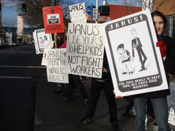

Submitted on Fri, 02/18/2011 - 7:56pm
I will not expound on the details here but the last few days have seen a massive upsurge of rank-n-file activity. At this very moment the public schools are closed and huge demonstrations are occurring. This energy is directly concerned with stopping anti-union legislation. However, it looks as if the bill may go through ( in do time) but may also be piecemealed out in the next 6 months. Either way, the militant rank n file are organizing events and trying to push this past the union issue, further into our society.
Submitted on Mon, 02/14/2011 - 11:41am
Fellow Workers,
Some workers and wobblies in Portland, OR could really use some solidarity in the form of some phone calls.
The Portland branch of the Industrial Workers of the World (IWW), workers at Streetlight and Porchlight youth shelters, and workers form Harry's Mother (two Janus non-profit programs) began picketing in front of Janus Youth Program's main office at 707 NE Couch on February 7th. We are doing so because Janus is in contract negotiations with these two different IWW-represented shops, and in both of those contacts, there is an employee review panel which has been in place for a decade which gives workers the right to contest firings and have a no-cost review of those management decisions. Janus is now claiming they will not sign the contacts with those time-honored panels, and is refusing to give workers their pay increases, until workers accept binding arbitration instead of the peer review panel, which would cost the workers and the union potentially thousands of dollars they don't have.
More info and a press release are available at portlandiww.org
Please call this week (2/14-2/19) in the morning between 9am and 11am west coast time.
Call Janus's Main office, request to speak with Dennis Morrow. .
Email the executive director at dmorrow@janusyouth.org
And. their negotiating team which consists of a program director and a lawyer kdonegan@janusyouth.org, andrew@portlandemploymentlaw.com
We are looking to set a tone that is both polite and firm.
Here is a sample script,
Hello,
This is ________________________. I am calling in support of the union workers at Janus Youth. They deserve both the peer review panel and a decent wage. Do not deny the democratic oversight provided by the peer review panel and replace with a process that could cost workers and the program thousands of dollars. As a non-profit, you should use your money to help youth, not fight workers.
PDX Janus Picket Video & Interview - link
Submitted on Tue, 02/01/2011 - 3:36am
Take action: http://www.citizenspeak.org/node/2128
Dear Friends,
Almost two years ago MPG(Media Planning Group), a global ad agency, began a massive layoff operation with the arrival of a new CEO, Shaun Holliday. Included in the severance contract were two anti-employee provisions. The first took away the employee's right to sue if MPG were to violate any portion of the agreement while the company reserved its right to sue if the employee were to violate the agreement. The second provision restricts the employee from saying anything bad about MPG and at the same time the company can badmouth the employee with impunity. When one of their former employees, Joseph Sanchez, refused to sign the lopsided agreement MPG refused to negotiate a fair severance agreement. To this date the major ad agency hasn't paid a cent to Joseph even though the parent company, Havas, continues to increase its profits.
In less than a year MPG sacked CEO Shaun Holliday. Please take a moment and let MPG know that they haven't finished correcting their mistakes until they make a fair and equitable severance agreement with their employees. Click here to send an e-mail to the CEO and EVP of HR of MPG.
Thank you for your continued support ensuring that working people are respected.
Solidarity,
IWW NYC GMB
For more info on this campaign: False Advertising? MPG Lays Off Workers While Profits Grow
Submitted on Fri, 01/28/2011 - 7:28am
The Nebraska Industrial Workers of the World (IWW) and the newly-formed Open Harvest Workers' Union have been engaged in a month long struggle to improve treatment and compensation of workers at Open Harvest Cooperative Grocery in Lincoln. On Monday, January 3rd, the Nebraska IWW met with the Open Harvest board of directors. We presented a list of 5 demands, which the board agreed to address. In fact, we left the meeting feeling somewhat optimistic, as the board declared at that meeting that the current grievance policy was not compliant with their policies on fair treatment of workers.
Subsequently the board ruled that the general manager was to formulate a new, compliant grievance policy. We considered this to be a small victory as one of our demands was the complete overhaul of the grievance procedure. We previously stated that the existing grievance policy was unfair and intimidating because it forced the worker, who may very well have a grievance with management, to address part of management - the general manager - with any grievance and the general manager is given the power to throw out any grievance he or she felt was without merit, instead of passing it on to a board of directors committee for review. We argued that a fair grievance policy should bypass management altogether and go to a "grievance committee", a committee which should include members of the board and at least one democratically-elected peer (a non-management worker).
Our impression following the meeting was that most of the board members were sympathetic to this proposal and the rest of our demands (in fact a couple even stated so in private to us after the meeting). Our other demands are as follows: the reinstatement of IWW member Andrew Losh until his grievance is reviewed by a grievance committee; that board positions be made available to workers (a growing trend with progressive co-ops); wage increases for workers (workers currently start out at minimum wage and are given little opportunity for advancement, our goal is a living wage and benefits for all co-op workers); and full-time hours/benefits made available to non-management workers (currently only management receive full-time hours and insurance benefits). For more on this meeting see this article: http://www.iww.org/node/5312
Unfortunately our optimism soon began to fade. All demands, except the first one, were not given a concrete deadline, all we asked was that progress be made; but we did set a one week deadline for our first demand - the reinstatement of IWW member, Andrew Losh. This deadline (Jan. 1, 2011) came and went, so we announced our intent to picket the co-op in order to further expose the problems at the co-op and to encourage swifter action from the co-op bureaucracy.
Submitted on Sun, 01/23/2011 - 3:02pm
 On Monday, January 17, 2011, Martin Luther King Jr. Day, while baristas at the Astor Place Starbucks in Manhattan were declaring their membership in the IWW, members of the IWW and supporters descended on Starbucks throughout the United States to wish baristas a happy Martin Luther King day. As part of these greetings, IWW organizers informed baristas of the recent victory won by IWW Starbucks baristas in securing time-and-one-half holiday premium for working on Martin Luther King, Jr. Day.
On Monday, January 17, 2011, Martin Luther King Jr. Day, while baristas at the Astor Place Starbucks in Manhattan were declaring their membership in the IWW, members of the IWW and supporters descended on Starbucks throughout the United States to wish baristas a happy Martin Luther King day. As part of these greetings, IWW organizers informed baristas of the recent victory won by IWW Starbucks baristas in securing time-and-one-half holiday premium for working on Martin Luther King, Jr. Day.
The victory came after a spirited three-year initiative of the IWW Starbucks Workers Union (SWU) which made public the company's second-class treatment of Dr. King's birthday and called on the coffee giant to pay the same premium that it pays workers on six other federal holidays. After Starbucks refused to change its policy, union workers and their supporters launched a determined campaign of grassroots actions in Starbucks stores and communities all across the country in support of equal treatment for MLK Day. (For more information, see related article: Starbucks Baristas Win Equal Treatment for MLK Day After Three Year Union Fight.
IWW members visited Starbucks and talked with baristas in hundreds of cities throughout the US.
All in all, the effort was a huge success. Workers were positive and appreciative, and it shows that solidarity unionism and international solidarity is still a very effective strategy.
The Industrial Workers of the World union effort at Starbucks is the first time a labor organization in the United States has succeeded in building a base of organized baristas at the company. With over 300 worker-organizers across the country and growing, the SWU has consistently chalked up victories at Starbucks including across-the-board raises, more secure work hours, and respectful treatment from previously abusive managers whose conduct improved due to union pressure campaigns. The SWU has repeatedly prevailed against Starbucks in the legal arena across multiple cities including in a lengthy New York City trial over pervasive illegal union-busting, the first time the company had to square off against baristas in open court regarding unfair labor practices.
The IWW Starbucks campaign is just beginning. If you are a barista at Starbucks, or if you are a worker at any unorganized workplace, including especially a major chain or fastfood franchise, we want to hear from you. Contact us by visiting any of the links listed at the end of this article.